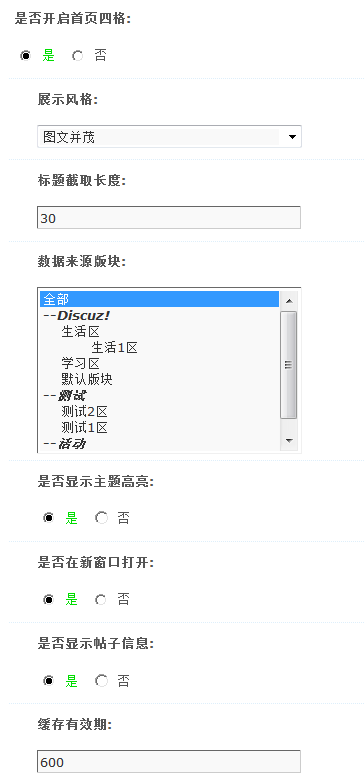
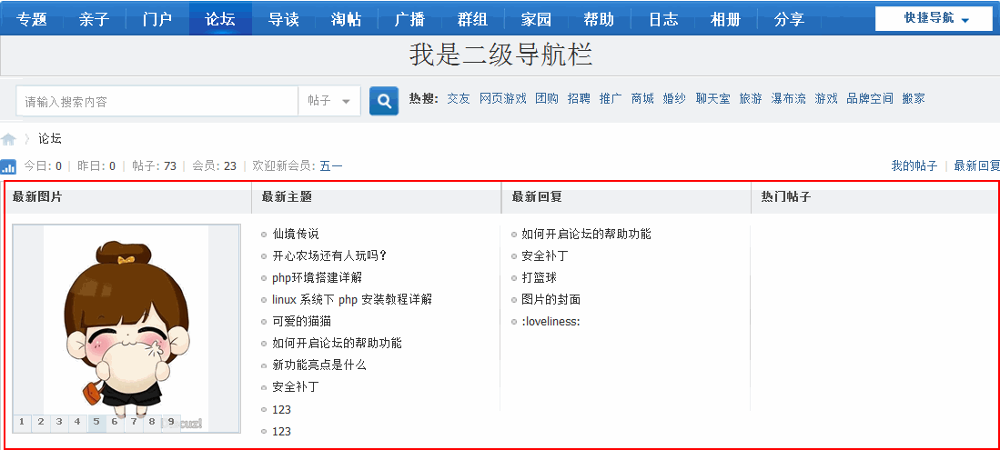

首页四格
对于首页四格大家在很早之前就有了解，这次我们把该功能加在了产品中，省去你安装四页四格插件的麻烦，可以在这里直接开启，开启后在论坛首页会显示四格内容推荐。
操作路径：【后台】=>【论坛】=>【首页四格】
一、开启
开启后可以选择展示风格、标题截取长度、数据来源版块是否高亮等信息，如下图所示：
展示风格：有两种展示风格可以选择，图文并茂: 幻灯+新帖+新回复+热帖; 简洁文字：新帖+新回复+精华贴+精华贴；
标题截取长度：设置标题的最大长度，超过的部分将被截取掉。
数据来源版块：可以选择让哪些版块的数据显示在首页四格。
是否显示主题高亮：选择“是”在首页四格中显示主题高亮效果。
是否在新窗口打开：首页四格中的主题在新窗口打开链接。
是否显示帖子信息：鼠标移到标题上方时，显示帖子详细信息 。
缓存有效期：设置论坛首页四格缓存更新的时间，默认为 600 秒更新一次。
设置好以后，在前台的显示效果如下：
